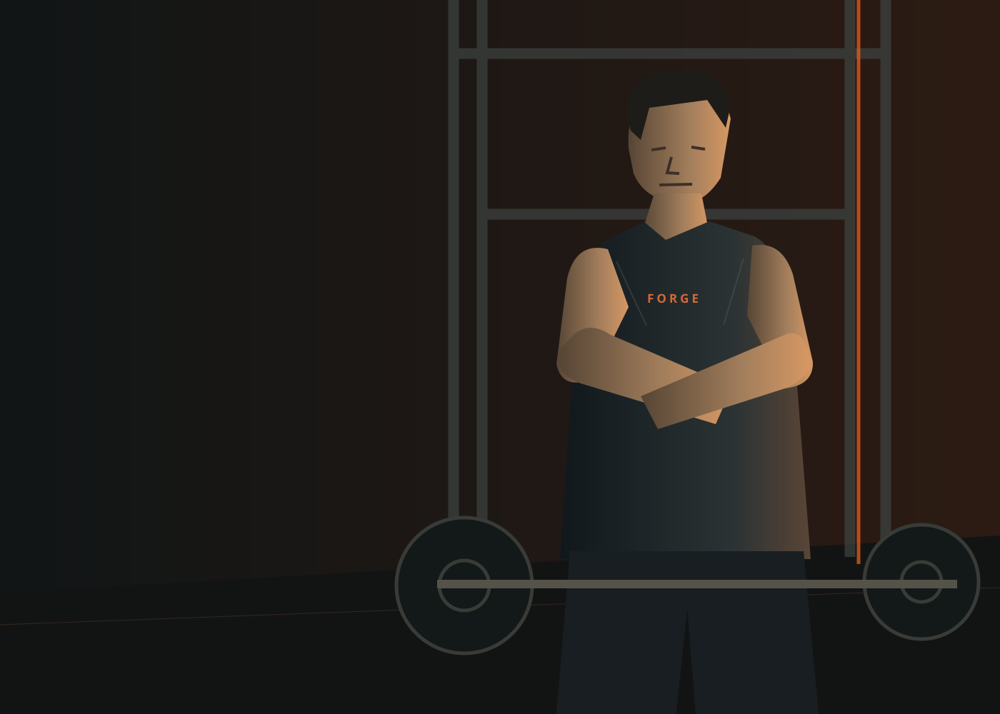

1-ON-1 TRAINING
Fully personalized programs designed around your goals, schedule, and current fitness level. In-person sessions in Prague or online.

PERSONAL TRAINING & COACHING
Professional personal training and online coaching. Real programs. Real results.
WHAT I OFFER
Fully personalized programs designed around your goals, schedule, and current fitness level. In-person sessions in Prague or online.
Custom training + nutrition plan, weekly check-ins, and direct access to me via app. Train from anywhere in the world.
Science-backed meal plans tailored to your body, your goals, and your lifestyle. No fads, no restrictions — just results.
RESULTS SPEAK FOR THEMSELVES
Every transformation starts with one session. These are illustrated brief-supplied stories, not real client photographs or verified outcomes. Individual experiences vary.
12-MONTH TRANSFORMATION
Philip aimed to lose fat and build muscle. With determination and a solid plan, he succeeded remarkably.
6-MONTH TRANSFORMATION
Anna wanted to feel strong again. She came in uncertain — she left unstoppable.
8-MONTH TRANSFORMATION
Marcus had tried every program. In this illustrative story, structure and consistency made the difference.
THE WORK, IN THEIR WORDS · ILLUSTRATIVE
★★★★★“Peter is really an awesome coach. The results we achieved in just 2 months are beyond what I thought possible. He keeps you accountable every single day.”
MARK D. — 2 MONTHS
★★★★★“My progress has been astonishing. I feel empowered and motivated like never before. The program was tailored exactly to my life.”
SARAH T. — 4 MONTHS
★★★★★“This journey has been incredibly rewarding. I am so thankful for the structure, the guidance, and the genuine care Peter puts into every session.”
JAMES R. — 6 MONTHS
ABOUT ME · PETER COOPER
“The ultimate line between your dreams and reality is called Action.”
I've spent over a decade helping people transform their bodies and their confidence. My methods combine science-based training, honest nutrition, and the kind of accountability that actually sticks. Whether you're starting from zero or pushing past a plateau — I'm here to get you there.
LIMITED SPOTS AVAILABLE · BRIEF COPY, NOT LIVE AVAILABILITY
Book your first free consultation call. No commitment.
Just a conversation about your goals.
YOUR NEXT STEP
Prepare a local consultation request. This site sends nothing and confirms no session, availability or health outcome.
General fitness support is not medical care. If you have symptoms, an injury, pregnancy-related needs or a medical condition, seek appropriate professional advice before exercise or diet changes.